Docs
How we got here
The brief, our research, the first concept, and every prototype since, with what we decided. The finished game is described on the other pages: Sound, Setup, Look book, Models and City.
Contents: Brief · Research · Concept · How it works now · Prototypes · Testing · Where it's at · Team · Process book
The brief
This is the brief we were given, copied from the class handout (Interactive IV, Project 02).
Much Ado About Music. Duration: 4 weeks. Group size: up to 3 students (solo work allowed, but be mindful of scope and complexity).
What happens when hands are no longer our primary interface?
In this project, you will design and build a working interactive system in which music is at least one of the inputs or outputs, and which responds with visual feedback. The goal is to explore how action, sound and image work together, and to design interaction people understand without explanation.
Your system can listen to music and respond visually, let people make music through a new kind of input, or answer them musically.
Requirements
- Music is an input, an output, or both. Music is meant broadly: melody, rhythm, a live instrument, singing, humming, or generated sound.
- The user's actions shape what happens. What someone does must noticeably change the visuals, sound or both. A visualiser that simply reacts to recorded music does not meet this requirement.
- Visual feedback explains, not decorates. It can be a screen, a projection, lights, or physical movement, but it must show that the system noticed the user's input, what it understood, or what their action changed. Visuals that would look the same whatever the person did count as decoration.
Project phases and expectations
This project follows the complete user-centered design process, compressed so you reach a working prototype early:
- Research (days 1 and 2): Investigate existing music interfaces and interactive music projects. Sketch at least five quick ideas each, then pick three as a team.
- Concept and scenarios (rest of week 1): Act out the three concepts with paper props and choose one. Define the user, the context, and your inputs and outputs. End the week with a 5-minute concept pitch.
- Interaction mapping (week 2): Map how each action changes the music and the visuals, and how the system shows it noticed the person.
- Proof of concept (week 2): By midweek, get the simplest version of input, music and visual feedback running together. Faking parts by hand (Wizard of Oz) is fine.
- Build and testing (week 3): Connect the parts and test with at least 2 people outside your team. Document findings and adjustments.
- Refinement and final demonstration (week 4): Improve the design based on testing, finish the documentation, and present a live demo at the final critique.
Key deliverables
- Working prototype: a functioning system, demonstrated live in a 7-minute final presentation.
- Interaction demonstration: a short video (2 to 5 minutes) showing people using the system, as a backup if the live demo fails.
- Project documentation (submitted as a PDF), which must include: a research summary and a description of your user and context; a project concept overview; a diagram of how actions map to sound and visuals; testing insights and iteration notes; a reflection on designing for sound and sight together.
Research
This research answers five questions:
- What have existing music games and body-controlled games already solved, and where did they fail?
- Which tracking and audio tools can get us to a working prototype by mid week 2?
- What makes lean and balance controls feel good instead of frustrating?
- How do we keep a moving 3D camera comfortable on a big screen?
- Where does the concept risk failing the brief, and how do we fix that early?
Music games
| Game | What it does | What we learn |
|---|---|---|
| Audiosurf | Analyses any song and builds a racetrack from it. Elevation and layout follow the music's dynamics, and blocks appear in sync. Reviewers noted blocks sometimes miss the beat, so it can feel like a random track with a song behind it (GameSpot). | The proven core of our idea. Calm sections climb slowly, intense sections drop fast. Pre-analyse the song offline and hand-tune note timing for the demo track rather than trusting live detection. |
| Tetris Effect | The soundtrack is composed in real time from the player's actions; moving and rotating pieces trigger sounds matched to the beat. | Each catch and each balance state should add or change a musical layer, quantised to the beat. |
| Rez | Effects and visuals sync with the music, so the player builds the song by playing; failing just makes the song less complex instead of discordant. | A great failure model. Falling off balance strips layers instead of playing a harsh error sound. |
| Beat Saber | Its scoring rewards broad, precise swings rather than timing; the analysis calls this instructed motion, with patterns that make players move fluidly. | Place notes so that catching them produces a pleasant body movement, like a surfer's arm sweep. |
| Synth Riders | Coloured orbs per hand plus rail-shaped hold notes; easy mode keeps the barrier low for newcomers. | Colour-code notes per hand and add rails as "surf along" notes. Offer an easy mode for the critique demo. |
Body-controlled games
| Game | What it does | What we learn |
|---|---|---|
| Child of Eden (Kinect) | Right hand guides a lock-on reticle, left hand a rapid-fire one; reviewers found hand tracking accurate. | Hands as two cursors works. One review flagged a sudden camera jump when switching hands (God is a Geek), so smooth the hand handover. |
| Adrenalin Misfits (Kinect snowboarding) | Lean to steer, twist to spin. Reviewers crashed constantly because a light lean and a hard turn were not distinguished. | The main warning for us. Lean needs a dead zone, smoothing and a response curve. |
| Dragon Rider (Uni Hamburg study) | Compared leaning with Kinect against a Wii Balance Board; Kinect was faster and rated more intuitive and fun. | Supports camera tracking over a balance board. Calibrate each player's own maximum lean angle. |
Interactive music installations
| Installation | What it does | What we learn |
|---|---|---|
| BVR_SND (TouchDesigner) | Camera tracking maps hand height to filter frequency, hand distance to sound layers, head to pulsation. | A ready mapping vocabulary. Lean could open a filter, hand spread could add a layer. |
| DJ Light (Cinimod Studio) | Visitors become guest DJs; body movement sets colours and ambient sound across the space. | Shows the turn-taking, walk-up format that suits a live critique demo. |
| Echo Temple (MPC Digital) | Body movement controls each instrument's volume, pitch or effect; a central tower holds the core mix. | Keep the core loop fixed and let the player control layers on top. That keeps it musical. |
Principles: lean controls and comfort
The two things most likely to break the experience are twitchy lean controls and a camera that makes people dizzy. Both are well documented and both have known fixes.
Lean and balance controls
- Calibrate per player. Record each person's neutral stance and maximum comfortable lean in a 5 second setup pose, then map lean as a fraction of that range (the Dragon Rider method).
- Dead zone plus smoothing. Ignore small sway around neutral, then smooth the signal so a light lean and a hard turn feel different. This was the exact failure in Adrenalin Misfits.
- Measure the torso, not the hands. Use the angle of the shoulder line and hip midpoint for balance; keep hands free for catching. This also stops players faking balance with small movements.
- Separate the two inputs clearly. Body lean = balance, hands = catching. Two clear channels are easier to learn than one overloaded one.
Comfort on a big screen
- Visually induced motion sickness comes from vection: the feeling of moving that comes only from what you see. A wide field of view and fast-moving objects filling the view make it stronger (Arxiv survey).
- Keep a static reference in view. The surfboard and the player's avatar stay fixed in frame; a fixed HUD or frame helps reduce sickness (Stride docs).
- Limit camera yaw and sudden acceleration. Reducing turning and acceleration are standard comfort techniques (UploadVR).
- Let the wave tilt the board, not the whole camera.
- Smooth the space backdrop. Less texture detail in the passing environment weakens vection (LaValle, Virtual Reality). Space with sparse stars suits this well.
- No camera shake. Avoid shaking or bobbing cameras, or offer a steady option (IxDF).
Principles: feedback and accessibility
Feedback that explains
- Balance meter on the board itself. Board tilt and a colour shift (calm to warning) show how far off balance the player is.
- Mirror the player. A simple silhouette or skeleton shows the system sees them, which matters most in the first seconds.
- Catch confirmation. A caught note bursts in its hand's colour and plays a tone on the beat, like the tone confirmations in Child of Eden.
- Fail gently. Losing balance drops music layers and dims the wave instead of a game-over screen; regaining balance brings them back.
Accessibility and onboarding
- Seated mode. Upper-body lean works sitting down, so players who cannot stand on a board can still play.
- Difficulty by wave amplitude. Easy mode flattens the waves; a beginner and an expert can play the same song.
- Teach by doing. The first 15 seconds use a flat wave and slow notes, so the brief's "understood without explanation" test is passed through play, not text.
- Physical safety. If a real board prop is used, keep it flat on the floor; balance comes from the screen wave, not a wobbling platform.
Risks we found early
| Risk | Why it matters | Fix |
|---|---|---|
| Music plays the same regardless of the player | Fails "user's actions shape what happens" | Split the song into stems (drums, bass, melody, vocals). Good balance unlocks layers; catches add melodic tones on the beat; losing balance filters the music down. |
| Visuals look the same whatever the player does | Fails "visual feedback explains, not decorates" | Every visual change ties to an input: board tilt = lean, wave colour = balance state, note bursts = catches, missing layers = dimmer space. |
| Twitchy lean control | Frustration kills the test sessions | Calibration, dead zone, smoothing (see the principles above). |
| Motion sickness on a projector | Testers stop early | Fixed board in frame, no camera yaw, sparse backdrop. |
| Tracking fails during the live 7-minute demo | Prototype grade is 25 points | Fixed lighting and plain background, tested camera position, and the required backup video. |
| Scope: full 3D game in 4 weeks | Proof of concept is due mid week 2 | Week 2 target: one lean value tilting a board on one wave, one stem muted and unmuted. Wizard of Oz the rest. |
| Off-beat notes | Audiosurf's main criticism | Pre-analyse the demo song and hand-check note positions. |
Mood boards
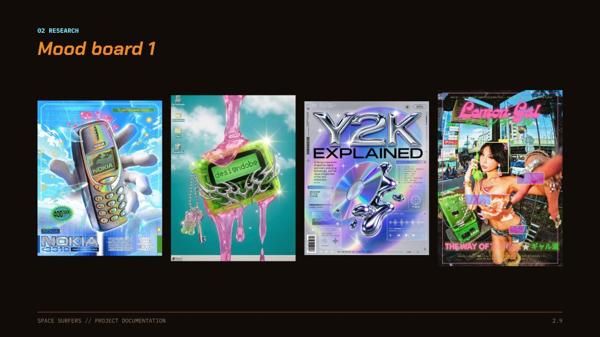
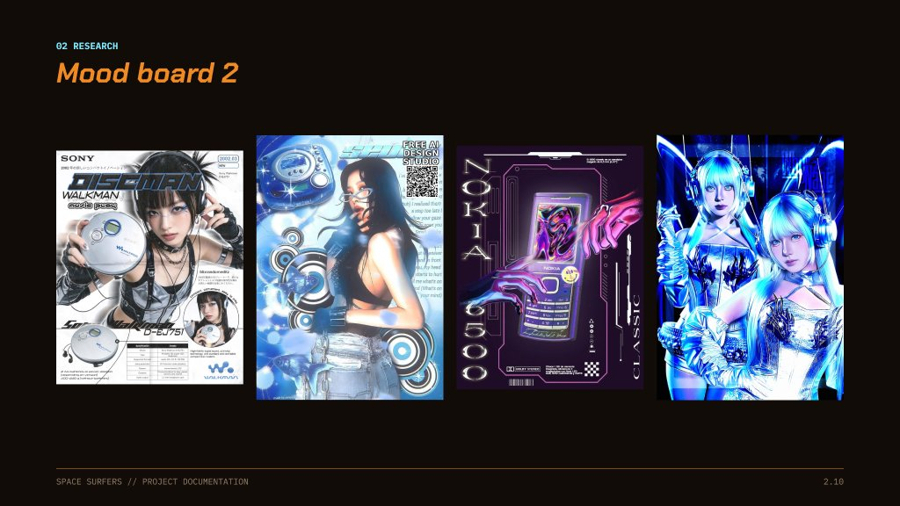
The research was written in week 1, for the first concept (Wave Rider): some fixes, like stems, hands catching notes and a space backdrop, changed later. The prototypes show what and why.
Concept
It started as Wave Rider: surfing an energy wave through space to the beat of a song, with hands catching notes, health, shields and three lanes. The interaction stayed, the story and the extras changed: it became Space Surfers, a lean-only ride chasing an orb through a hanging retro futuristic city.
- Who it's for: students and visitors, about 16 to 35, who like music and casual games. No gaming or musical skill needed.
- Where: a walk-up installation in a gallery, open day or lab, one player at a time with others watching, one song per ride.
- The goal: catch the orb before the song ends by staying on its trail.
How it works now
You stand sideways on a board in front of a Kinect v2. A tracker finds your feet, shoulders, hips and hands in the infrared image and sends your lean to the game. You pick a difficulty, each with its own song, and ride the trail that song builds. The full mapping is on Sound, the setup on Setup, the look on Look book, the models on Models, and how they are put together into the city on City.
Prototypes
Every prototype is kept in its own folder, so each step can still be played. Oldest first. Each stage says what we built, and what we decided because of it.
1. Concept prototype: Wave Rider
Early October
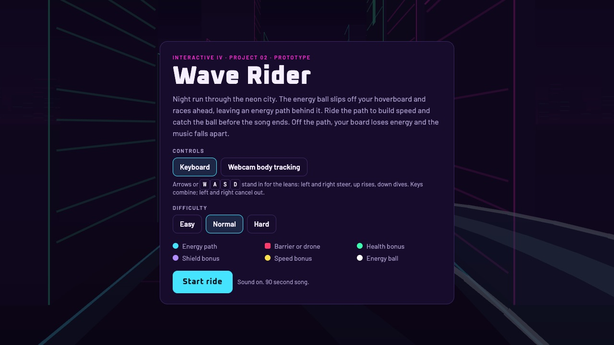
A night run through a neon city on a hoverboard, chasing an energy ball. It had health, shields, speed bonuses, drones and three difficulties, with keyboard or webcam body tracking.
Decided: The core stayed: ride a path, chase a ball, beat the song. The extras (health, shield, drones, hands catching notes) were too much for four weeks and were cut over the next prototypes.
2. Browser prototype: follow the song by ear
12 to 23 October
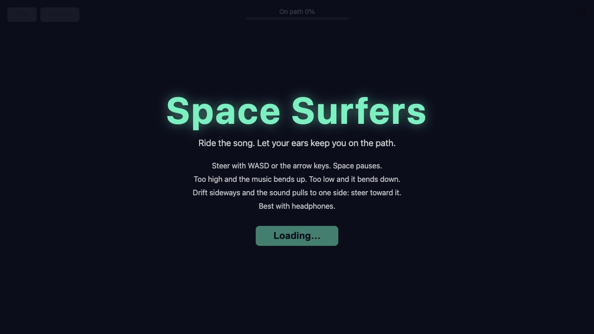
Before touching the Kinect we tested the core idea in the browser. The song builds a path, and you steer with the keys. Five pitched copies of the song play at once: too high and the music bends up, too low and it bends down, off to the side and the sound pulls toward the path.
Decided: Following a path by ear works and is the heart of the game. The song analysis (loudness and brightness shape the path) carried over to every later prototype.
3. First ride in Godot with the Kinect
28 October to 2 November
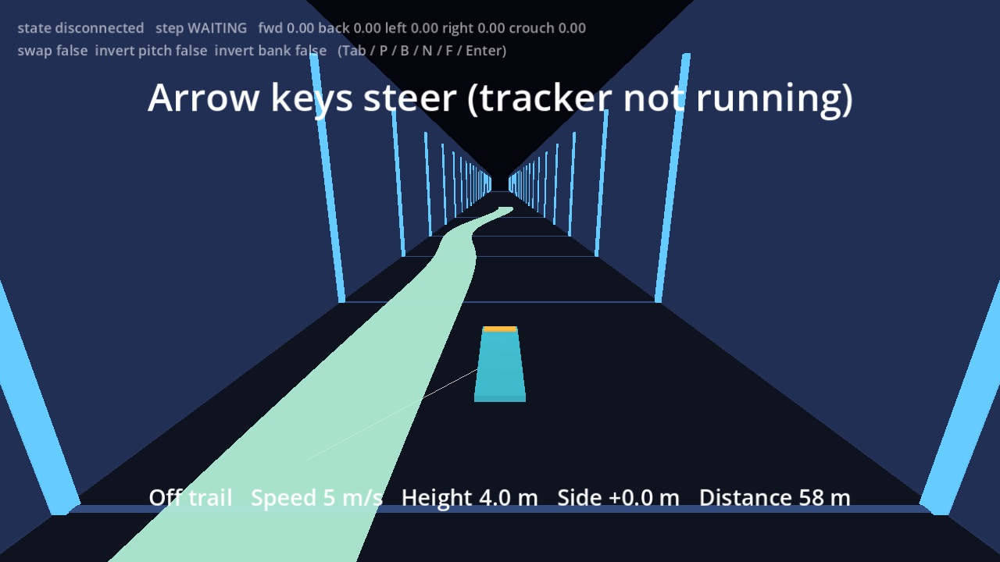
The same idea rebuilt in Godot, steered by leaning on a board in front of a Kinect v2. On the trail the board speeds up, off the trail the song distorts and slows.
Decided: Godot instead of Unity. Our own tracker, because the official Kinect software only runs on Windows. Lean is measured as shoulders over hips with a range per player, because raising an arm read as a lean.
4. Difficulty modes
4 November
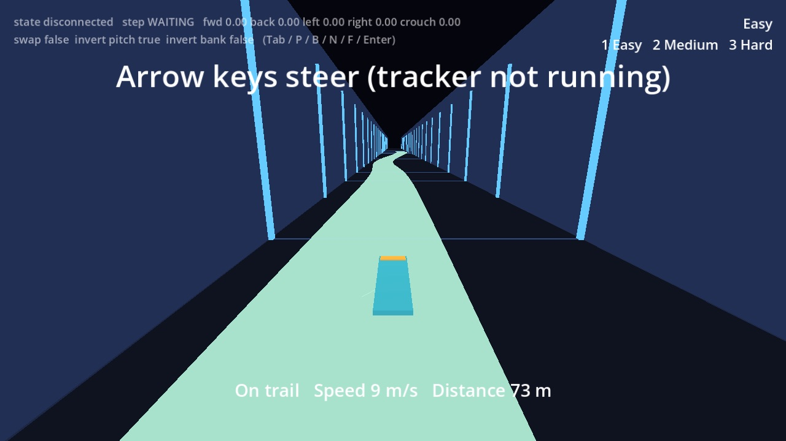
Easy, Medium and Hard, with lean smoothing, a response curve and a small assist.
Decided: The first ride was far too hard and the lean too twitchy, exactly the failure the research warned about. Forward and back were also swapped.
5. Wider camera and a taller space
4 to 6 November
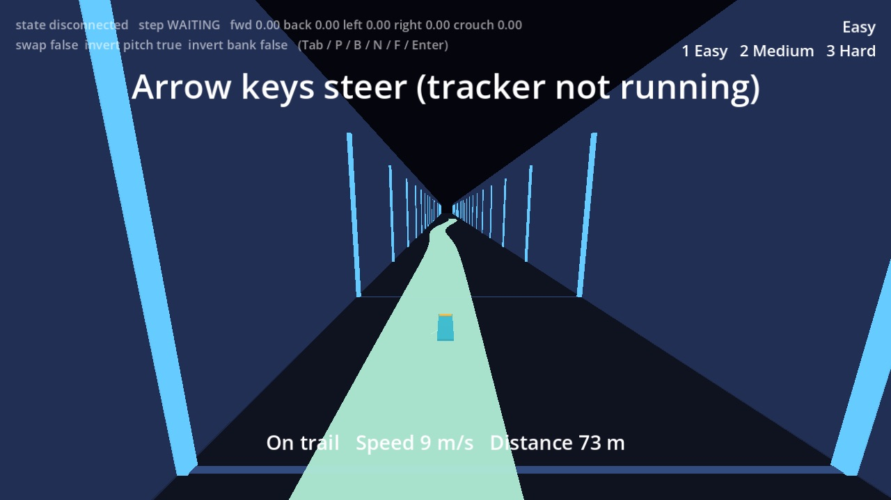
The camera pulled back so curves read earlier, and the ceiling doubled so the trail climbs and dives more.
Decided: With the old camera you saw curves too late. We wanted more up and down riding, since that is what leaning forward and back is for.
6. Obstacles that follow the song
6 November
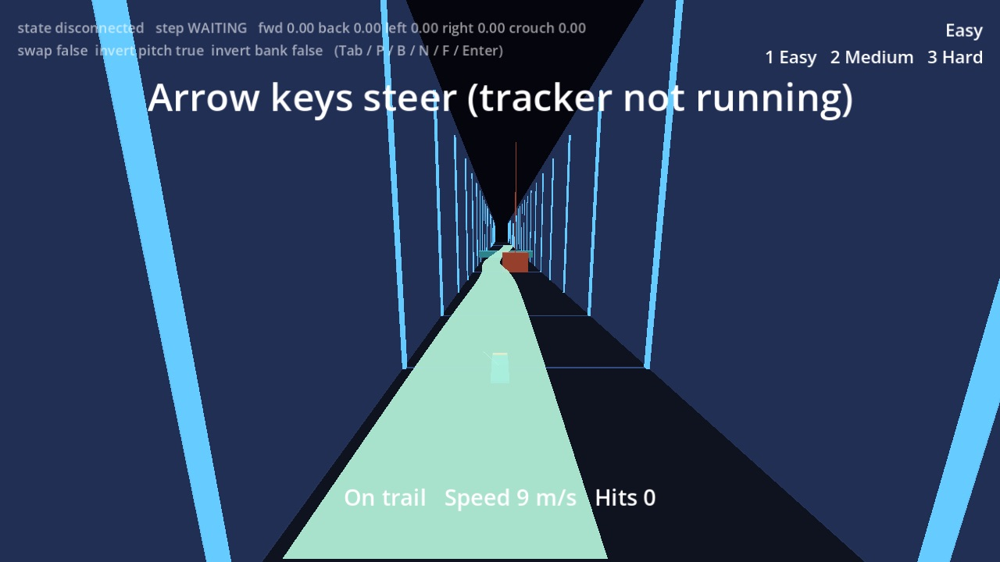
Obstacles grow off the walls and ceiling, each one following one sound in the song. Harder songs add more sound layers and closer spacing; loud parts get busier. A hit slows you down; there is no crash.
Decided: The project is sound based, so obstacles come from the music too. The shield was cut and health was cut earlier (the professor found health too complicated), leaving boost as the only pickup.
7. One orange world
6 November
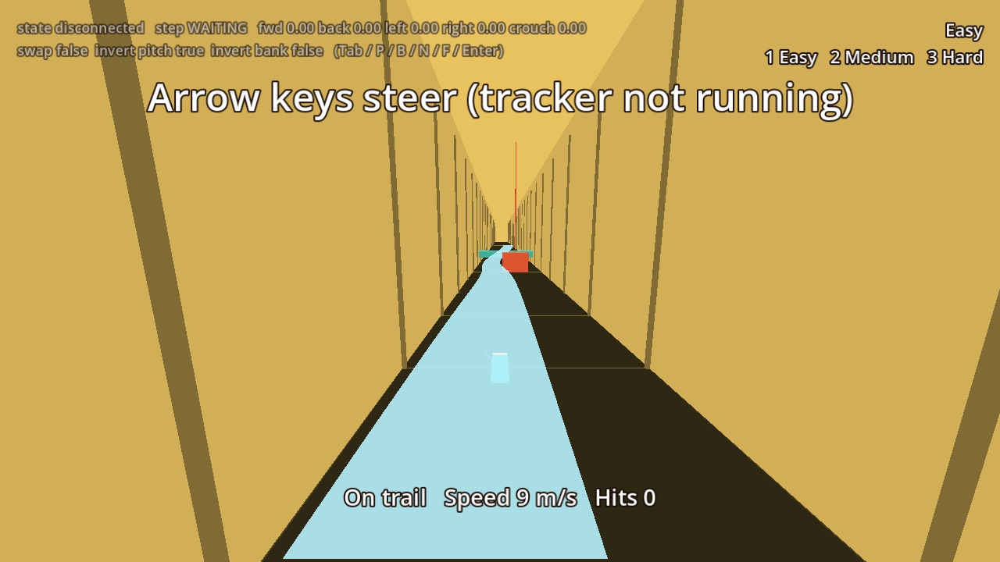
A tram replaces the hauler, the trail turns blue, and the world becomes one orange haze, yellower on Easy and redder on Hard.
Decided: Zones and extra pickups were too much for this stage. One colour per difficulty is enough to tell them apart.
8. The city, built by the song
8 November
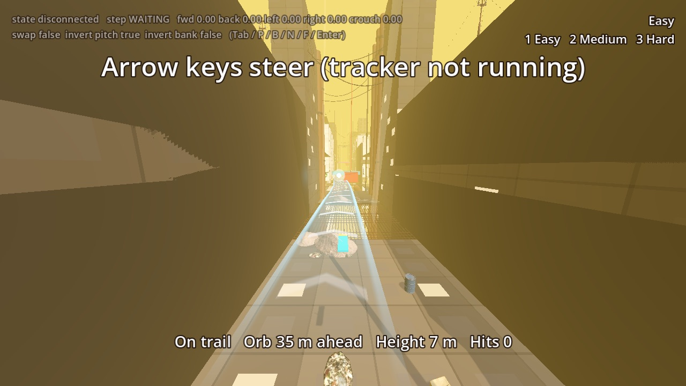
A hanging city made of chunks the song places: louder parts are taller and busier. The team's models come in, with boost pads.
Decided: The world runs at a fixed speed; riding well pulls the orb closer instead of making you faster. The flying space slowly climbs over the song, away from the ground.
9. The full game
8 November
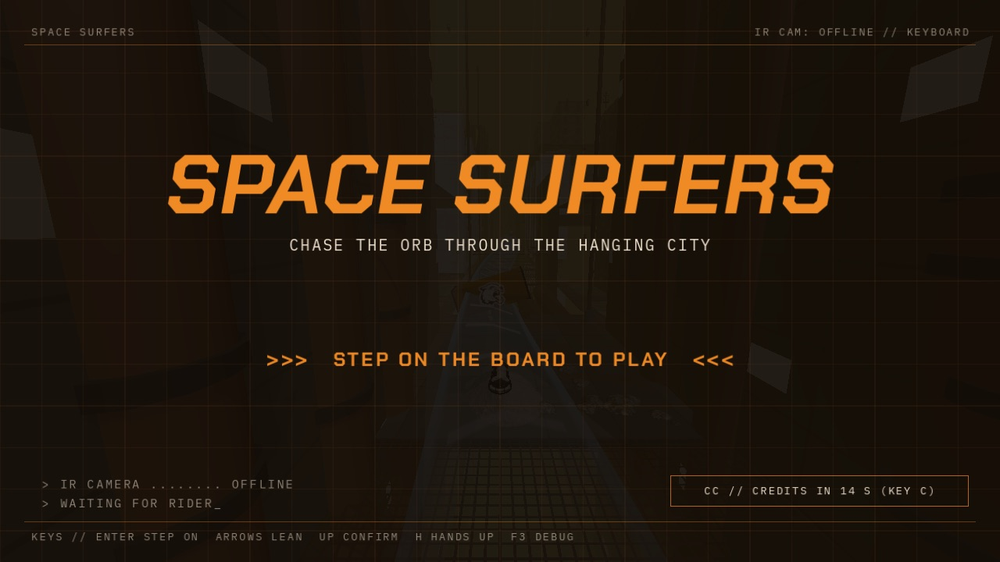
The whole flow from the Figma game plan: idle, calibrate, pick a song, countdown, ride, pause, win and lose, with a power meter and an "off the trail" warning. Raise both hands for 2 s to restart.
Decided: Testers did not know what to do, so calibration became guided, with a live meter and directions said relative to the screen. A black top returned no depth, so the tracker switched to MediaPipe body points on the infrared image. The orb could never be caught before; now riding well catches it.
10. Polish
9 to 15 November

The city was rebuilt from stacked models with nothing floating, every obstacle hangs from a steel frame, a boost speeds the song up 1.5 times for 5 seconds, each difficulty got its own royalty-free song, and calibration dropped to about 45 seconds.
Decided: Flat slabs and floating props looked fake. A small speed-up with the pitch kept was inaudible. The first demo song was not royalty free. Calibration was too long for a walk-up installation.
Testing
Our own playtests found most of the changes in the prototypes above: the game was too hard, the lean too twitchy, tracking lost riders in dark clothes or off the board, onboarding was too fast, and directions confused people standing sideways.
The brief asks for tests with at least two people outside the team. Who tested, what they did, what they said and what we changed goes here.
Where it's at
A playable prototype: full Kinect tracking, a guided calibration, three songs and difficulties, a city and obstacles built from each song, and a browser version for keyboard play.
- Test with people outside the team
- Ride the newest build on the Kinect, and listen to the new songs and sounds
- Update the browser version with the new city, obstacles, sounds and songs
- Record the demo video
- Later: hands as a second input, the zones, and a download kit for the tracker
Team
| Who | What they did |
|---|---|
| Sven Culjak | Mood boards, 3D design and modeling |
| Dinmukhamed Beisenov | Research, the first documentation, the demo |
| Nora Miskulin | Putting the gameplay together, mapping actions to sound, project management |
Process book
The process book as a PDF, with the slides, goes up here once it is final. This link will not change.